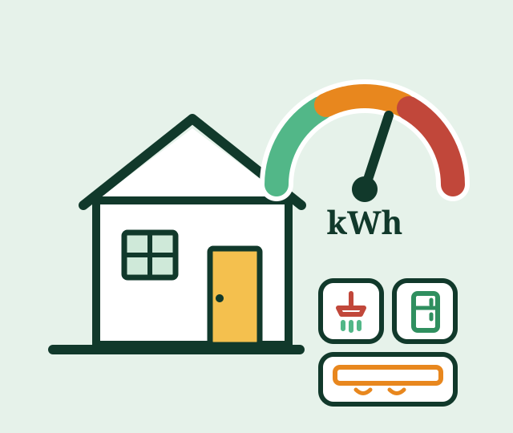

Calculadora de consumo
Estimativa mensal em kWh e em reais para cada aparelho cadastrado, com a participação de cada um no total.
Consumo consciente de energia
O Watt Certo calcula o consumo de cada aparelho da sua casa a partir do que você já sabe: quais equipamentos tem, quantas pessoas moram e quanto tempo cada um fica ligado. No fim, você vê quem são os vilões da conta e quanto dá para economizar.
Sem cadastro e sem login. Seus dados ficam no seu navegador.

Como funciona
Nada de termos técnicos: o site pergunta o que qualquer pessoa sabe responder sobre a própria casa.
Cidade, número de moradores e o valor da última conta. São os dados que calibram todo o cálculo.
Escolha os equipamentos da lista e informe quanto tempo cada um fica ligado por dia.
O resultado mostra o consumo de cada aparelho em kWh e em reais, e onde está a maior economia possível.
Exemplo de resultado
Veja como o sistema apresenta o consumo mensal estimado. O chuveiro aparece em destaque porque é o aparelho de maior potência, mesmo ligado por poucos minutos.
Simulação didática feita com a fórmula do próprio sistema (potência × horas por dia × 30 ÷ 1000) e tarifa de R$ 0,86 por kWh.
| Aparelho | kWh/mês | Custo |
|---|---|---|
| Chuveiro elétrico | 124 | R$ 107 |
| Geladeira | 44 | R$ 38 |
| Ar-condicionado | 36 | R$ 31 |
| Máquina de lavar | 12 | R$ 10 |
| Iluminação (LED) | 9 | R$ 8 |
| Total estimado | 225 | R$ 194 |
Por que isso importa
de toda a eletricidade consumida no Brasil em 2024 foi para as residências, o equivalente a 176.519 GWh distribuídos em 82,9 milhões de unidades consumidoras.
Na posição inverno, o chuveiro consome de 30% a 40% a mais do que na posição verão. Por isso ele tem uma tela de cálculo só dele no Watt Certo.
O que o site entrega
Estimativa mensal em kWh e em reais para cada aparelho cadastrado, com a participação de cada um no total.
Aparelhos com consumo variável, como o chuveiro, ganham perguntas próprias: potência, estação do ano, tempo de banho e frequência.
Comparação entre o valor estimado e o valor real da fatura, para mostrar se a conta veio acima do esperado.
Quanto a casa economizaria por mês ao substituir um aparelho antigo por um modelo mais eficiente.
Nenhum cadastro: os dados ficam salvos no navegador do usuário, com termo de consentimento que pode ser recusado.
O diagnóstico completo sai em poucos minutos, sem precisar entender de física ou ler a fatura inteira.
Acessibilidade em primeiro lugar
Economizar energia interessa a qualquer família. Por isso o site é construído para ser usado por pessoas com deficiência, público prioritário do projeto.
Fale com a equipe do projeto e participe dos testes da versão em desenvolvimento.